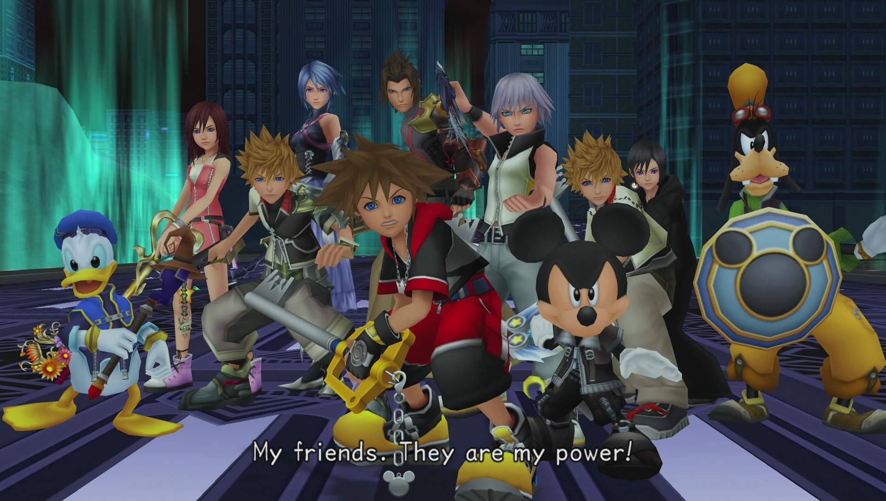
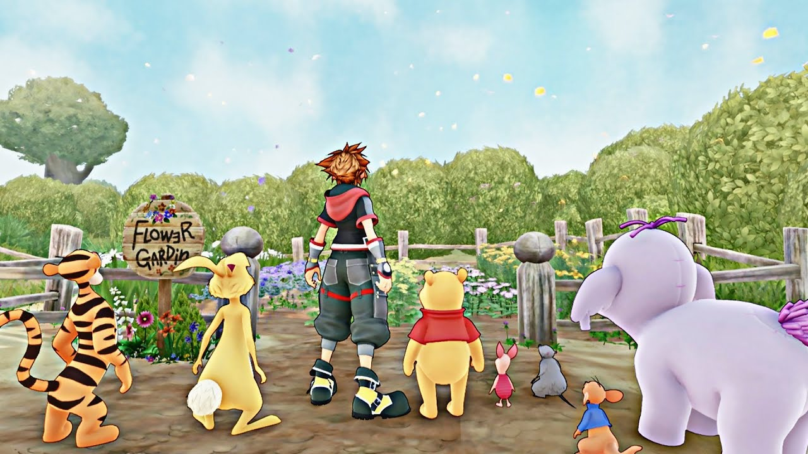
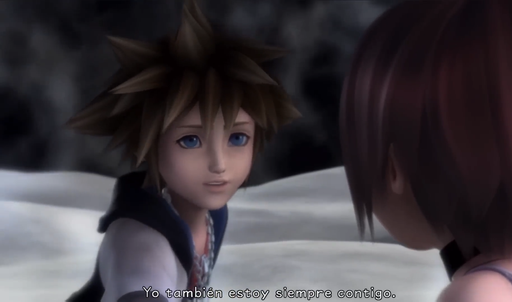

Les recomiendo mucho jugar a Kingdom Hearts. Hay videojuegos que tienen el poder de tocar ciertas partes de tus sentimientos de maneras que pocas cosas pueden hacer. Creo firmemente que Kingdom Hearts, la saga en general, fue concebida y se mantiene firme en su mensaje, movida por esa necesidad de hacerte sentir humanidad. Mientras escribo esto, suena la melodía de Lazy Afternoons, y me hace sentir muchas cosas: nostalgia, tranquilidad, melancolía, cercanía, pero sobre todo humanidad. Kingdom Hearts es una de estas experiencias en las que todo lo que lo forma está al servicio del mensaje, de los temas y las emociones, de las metáforas y los paralelismos. Y creo que tengo argumentos para relacionar todas las partes de la trama con la experiencia humana en comunidad y con el amor.
La mayoría de la saga, sobre todo a partir de Kingdom Hearts II (o más bien desde Chain of Memories quizás) se centra mucho en un tema: lo que nos hace humanos. En los videojuegos, según la Organización XIII, los informes de Ansem u otras conversaciones relacionadas con el lore, hay definiciones bastante claras de lo que te hace humano y lo que no: el corazón. Un incorpóreo o un sincorazón no albergan del mismo, por lo que no les hace como al resto. Pero la historia principal se esfuerza precisamente en hablar de que esto no es así, que es una verdad a medias o directamente no es cierto. Xion, nacida de los recuerdos. Roxas o cualquiera de los demás incorpóreos. Tanto los antagonistas como los protagonistas que no tienen un corazón están en la búsqueda de un propósito constante, de algo que les defina. Todos acaban demostrando su humanidad, su propósito y su razón de ser, que, aunque quizás en el lore se puede relacionar a que sus anteriores yo o sus orígenes poseían de esa humanidad, son ellos, en ese preciso instante, los que demuestran tenerla. ¿Qué es lo que les acaba dando el camino para lograr esa humanidad? Los vínculos y las relaciones. “My friends are my power”. El clásico tropo del poder de la amistad en los anime, en Kingdom Hearts es lo opuesto a una solución vaga o simplista para que los protagonistas salgan de situaciones adversas. Creo que es precisamente el núcleo de todo el mensaje que pretende mandar y nada podría definirlo mejor.
Jaja, pensaban que iba a hablar de simpáticos personajes de Disney y vengo a hablar de poliamor. “oh boy”.
Creo que aprender a querer es una de las tareas más difíciles. No es productivo, por lo tanto, siempre tiene que quedar en segundo plano. De hecho, no es que no nos enseñen a querer, es que se nos enseña a querer de cierta manera: la que sí casa con esta productividad. No generar relaciones profundas con nadie excepto con esa persona que encaje en el hueco que la sociedad te ha dicho que tienes que rellenar. Mi lucha constante conmigo y con los demás estos últimos años de mi vida ha sido esta.
Yo me considero una persona no monógama, poliamorosa, como sea el término, más lo primero que lo segundo, porque creo que tengo un concepto de poliamor que es algo distinto al que se suele aplicar, por eso no me gusta decirlo. No pienso en relaciones románticas cuando digo que soy poliamoroso. Quizás suena algo radical, no lo sé (no pretendo sonar único y diferente), pero yo pienso que las relaciones románticas en su concepto, ya sea la clásica monogamia o algunas variaciones más modernas, chocan frontalmente con el querer. La manera en la que estoy aprendiendo a tener una vida más plena con las relaciones es entender a las amistades como algo prioritario, y que todas sean amistades; es aprender a darles esos momentos y sentimientos que sólo se esperan que des a tu pareja romántica, y desde esta base, las relaciones sexo-afectivas que se construyan, si es algo que ocurre (no tiene por qué!) sigan esa lógica. Me encanta la palabra amistad, y la seguiré aplicando, pero creo que al igual que no me sirve el concepto de amor romántico, tampoco sirve el concepto de amistad al servicio del amor romántico. Una representación más visual: lo común es tener dos edificios separados, uno en el que se encuentra una bolsa de amistades, el otro con una/s pareja/s románticas, y que existan ciertos sentimientos que aplicar a unos y a otros. Eso es lo que personalmente no me sirve.
Las relaciones abiertas y el poliamor muchas veces autodenominado revolucionario creo que suele caer en estos mismos errores: sea de la manera convencional o de otras maneras más alejadas, pienso que nada es disidente cuando lo que se busca es ese tipo de vínculos y lógicas conservadoras o neoliberales (llámalo equis), pero en otros contextos, ya sean monógamos o no. Y es algo que muchas veces nos cuesta admitir, porque queremos estar lo más alejados posibles de eso, pero son políticas que se han aplicado en nuestro cerebro de una manera muy profunda porque atacan a los sentimientos. Decidir consciente o inconscientemente reservarnos ciertas acciones y sentimientos a nuestras relaciones románticas y no aplicarlo a las amistades (y viceversa!) creo que nos llevan a los mismos errores que cometen tu primo y su novia que llevan desde los 15 años.
Volviendo a la representación más visual, me gusta ver un único edificio que está sostenido por todas estas columnas a las que llamo amistades, relaciones, etc. No me gusta teorizar o filosofar por el mero hecho de hacerlo y creo que se entiende mejor con ejemplos prácticos. Pedir que te acompañe al médico. Pedir una baja en el trabajo por algo que le ha pasado. Pasar tiempo con su familia en año nuevo. Decir te quiero. Coger de la mano. Hablar hasta las tantas por el Whatsapp. Recoger en el aeropuerto. Regalar unas flores. Vivir con ella. Seamos sinceros: si estás leyendo esto, das o deseas compartir estas acciones con esa persona/personas con las que tener una relación romántica. Si no, pasaste por esa creencia en algún momento y has cambiado. Yo lo que quiero es poder hacer todo esto con esas personas a las que quiero tanto, sin complejos, para quererlas más, dando esa prioridad a construir amistades en las que poder hacer cosas que no se esperan que des a una amistad. Creo que me siento más pleno desde que aplico estas lógicas a mi vida y los demás también han decidido aprender a aplicarlas conmigo. Y de nuevo, es una lógica que se puede (y para ser coherentes, debe) seguir también con tener relaciones sexo-afectivas, que conste. El sexo y el contacto físico es una manera de expresar sentimientos o de divertirse, como otras que existen, y dar cualquier otra connotación más o definición a raíz de ello creo que lo único que nos hace es daño y nos aleja de esta idea de relaciones revolucionarias que intento transmitir.
En resumen, yo quiero compartir mi vida de manera profunda con personas que también quieran hacerlo conmigo, quiero formar familia y cuidar a estas personas que elija y me elijan, y cambiar ese juego podrido de prioridades que traen las relaciones románticas a uno más sano. Con todo esto dicho, quién me diría a mi que la saga de videojuegos que me acompañó en mi infancia, en mi adolescencia, y en mi adultez, no solo no esconde, sino que muestra abiertamente y sin tapujos esta manera de querer, y me ayuda a entenderla y a aplicarla. Así da gusto revisitar lo que jugaste de chiquito.
Sora me parece un protagonista perfecto porque creo que es la representación directa de las ideas que quiere transmitir el juego. Él es una máquina de querer libremente. Comparte lo que tienen los mejores protagonistas como Luffy, el poder de la simpatía. Sí, es cierto que Kingdom Hearts no impregna a Sora con esos tintes de libertador como hace One Piece, pero comparte mucho ese tipo de protagonista, aunque lo lleva más a menor escala, tocando los corazones de sus cercanos. El concepto del “elegido de la llave espada” es bastante diferente ahora que lo que se suponía que era en el 2000, pero Sora sí que sigue manteniendo ese aire de elegido en cuanto que es el punto de unión entre los personajes, ya sea literal o metafóricamente. Hay muchos personajes que orbitan alrededor de Sora, y aunque se puedan ver ciertas jerarquías evidentes (Riku y Kairi, Donald y Goofy), no se hacen incómodas, porque sabemos que el resto de vínculos también tienen una importancia vital para él. Lo vemos en como tiende la mano a Aqua y en como ayuda a Roxas a verse dueño de si mismo. Sora es capaz de dar al resto de personajes la habilidad y la posibilidad de querer y ser querido sin tapujos.
Podría ahondar en algunas interpretaciones que tildan más de románticos (convencionalmente hablando) los sentimientos y motivaciones que tiene Sora en sus búsquedas de Kingdom Hearts y Kingdom Hearts II para Riku y Kairi. Existen las escenas de la fruta Paopu, la conversación de Riku y Sora al final de KHII o la llave-espada-fusión-turbo-gay que tienen Sora y Riku en Dream Drop Distance. Escenas que el fandom muchas veces ha interpretado (o quizás, ha deseado interpretar, en los comunes casos de fan-fiction románticos) como sentimientos más alejados de una amistad y ya, sino como algo romántico. Que se casen ya hombre. Yo creo que estas lecturas chocan directamente con frases muy literales que se dicen en la saga sobre cómo Sora realmente trata a su gente: Riku y Kairi son su motivación, su familia, de nuevo, su poder. Y así lo son los demás también. Leer un subtexto romántico creo que le quita profundidad, pero no niego que esté. Precisamente, creo que refuerza mi punto: es un subtexto romántico aplicado a relaciones que no son románticas. ¿Cómo es eso posible? Pues es posible cuando la historia que nos intentan contar es que tenemos que dejarnos sentir, mostrarnos vulnerables y dar prioridad a esas relaciones que forman tu vida, sin complejos, queriendo y siendo íntimos, románticos y cursis.
Centrándome en esto último, creo que ahora es el momento perfecto para nombrar el mundo que, en mi opinión, es el que mejor representa el mensaje de Kingdom Hearts.
“…it’s easy to be brave when i have a wonderful friend like you, Pooh Bear.”
Hay pocos mundos que hayan hecho aparición en los tres juegos troncales de Kingdom Hearts. Estos juegos son los que marcan los puntos narrativos más importantes del crecimiento de Sora como personaje, y estos mundos concretos son revisitados con estos cambios en mente como eje principal. Estoy hablando, por un lado, del Coliseo del Olimpo, y por otro, del Bosque de los 100 Acres. El Coliseo del Olimpo quizás trae más directamente la relación de Kingdom Hearts con el shonen, esa evolución en cuanto a fuerza y madurez. A nivel de diseño, sirven como puntos iniciales muy buenos y tutoriales integrados en la narrativa (sobre todo en el caso de Kingdom Hearts III). Pero me centraré en el caso del Bosque de los 100 Acres.
Los personajes de Winnie The Pooh son sencillos, infantiles, fáciles de entender: personalidades marcadas que interactúan entre sí. Y que se quieren, mucho, y simplemente pasan tiempo juntos, jugando, respirando, viendo el anochecer y compartiendo vida. Pooh no necesita enamorarse, Pooh vive el amor en todos sus personajes. Tampoco el resto lo necesita. Creo que traer al jugador a un sentimiento nostálgico para mostrar unas maneras profundas de querer es una decisión muy inteligente, ya que es quizás de niños donde podemos sentir con menos tapujos, o simplemente porque nos trae mucho sentimiento, vamos (a mi la música del Bosque de los 100 Acres me hace llorar constantemente). Para el jugador, el mundo del Bosque de los 100 Acres son simplemente minijuegos, coleccionables y una acción secundaria que ni siquiera hay que hacer para poder completar el juego. Pero, en mi opinión, es en ese concepto en el que radica la clave: el juego te permite parar la acción para hacernos parar también emocionalmente. Las escenas que acompañan la recogida de hojas del libro y los minijuegos son escenas sencillas, cotidianas, tontas incluso, pero en los tres juegos utiliza sobre todo la escena final para hablarnos del tema principal por el que está pasando Sora. Y sobre todo, utiliza la forma sosegada de hablar de Pooh para transmitir la ternura que el querer necesita tener. Esa ternura que Sora no tiene miedo a dar a nadie. “Pooh. Estamos juntos. No hay un segundo en el que no lo estemos”. Decirle esto a alguien es algo precioso de decir, porque el “estar unidos siempre” en Kingdom Hearts no tiene ninguna connotación posesiva. Es un tema de lazos, conexiones.
Desde el primer Kingdom Hearts estamos haciendo lazos constantemente. Son metáforas del amor y las relaciones llevadas a conceptos físicos del juego: lazos entre corazones que permiten viajar entre las personas; lazos entre mundos, que a su vez tienen sus propios corazones, que también unen a Sora con la gente que va conociendo. Lazos entre Sora y los personajes de Disney. Lazos entre Sora y el resto de Guardianes de la Luz, e incluso, como vemos en el final de Kingdom Hearts III, lazos entre Sora y los antagonistas principales. Yo con todo esto sólo puedo ver una metáfora constante en nuestra cara de que tenemos que fortalecer todos estos vínculos, con quienes tengamos cerca, quienes tengamos más lejos, vínculos que nos hacen humanos, que nos dan compañía y motivación para afrontar el día a día.
Perdemos mucho tiempo cohibiéndonos. No sólo eso, sino que incluso cuando damos el paso de no cohibirnos y expresarnos, muchas veces seguimos cortando estas formas de expresarnos a solo ciertos tipos de amor, dejando de lado la forma de amar que en mi opinión, te hace ver al mundo, a los demás y a ti mismo de manera más clara, plena y satisfactoria. Tenemos que aprender a ser viscerales de una manera diferente, soltarnos, pedir ayuda a tu amiga en vez de dar un noticiario cuando has pasado todo solo o te has desahogado con tu pareja. Son muchas cosas que aprender, pero si a alguien le resuena este tipo de amor, quiere saber expresarlo mejor, ver con otros ojos a las personas que tiene cerca, de nuevo, le recomiendo jugar Kingdom Hearts.
A todas las personas que forman parte activa de mi vida, que me quieren y me dejan expresar mi amor. A todas las amistades que he revisitado para seguir profundizando y a aquellas que están empezando a serlo. A esos amores de mi vida que individual y comunitariamente se que me van a acompañar hasta que me muera. A todas esas luces que nunca se apagarán y a todos esos corazones que se han unido al mío.
